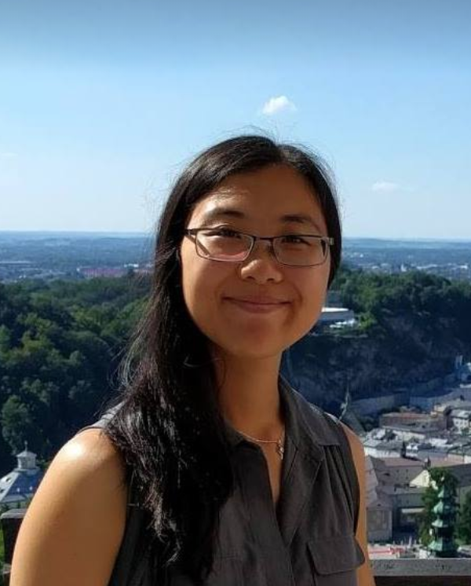

This is the homepage of Lisa Zhang.
Me In a Nutshell
I am an Assistant Professor, Teaching Stream at the Department of Mathematical & Computational Sciences, University of Toronto Mississauga. My office is located at DH3078.
I held many roles during my career: startup founder, data scientist, machine learning researcher, pure math student, and now a computer science educator. I am passionate about machine learning, computer science education, writing, and still have a soft spot for great data visualization and nerdy humour.
Teaching
In the upcoming year, I am teaching CSC311 and CSC324 in the fall 2021 term, and CSC413 and CSC263 in the winter 2022 term.
Past courses and archived course websites
- CSC263 Data Structure and Analysis
- CSC413 Neural Networks and Deep Learning
- CSC338 Numerical Methods
- CSC324 Programming Languages
- Fall 2020 (UTM) with Andi Bergen
- Fall 2019 (UTM)
- Fall 2018 (UTM) with Daniel Zingaro
- CSC321 Neural Networks and Machine Learning
- Winter 2020 (UTM) with Pouria Fewzee
- CSC290 Communication Skills for Computer Scientists
- APS360 Fundamentals of AI
- CSC108 Introduction to Programming
- Summer 2018 (St. George) with Mark Kazakevich
- CSC411/2515 Introduction to Machine Learning
Undergraduate Research/Project Courses
I frequently work with undergraduate computer science students at the University of Toronto Mississauga on research or implementation projects as part of CSC398/492/493 Independent Study Courses. Prof. Larry Zhang has a very informative FAQ about these project courses. Courses with me tend to have more of a research slant.
Most (but not all) students I worked with have taken a programming languages or machine learning course with me and have done very well. The project idea can come from either you or me. Here are some research areas I am especially excited about:
- Using machine learning to analyze student code to give "better" feedback (see Bazzocchi et al. 2020, Roy et al. 2020)
- Using the relational programming language miniKanren for program synthesis, or improve upon miniKanren. Programming language projects tend to be co-supervised by Greg Rosenblatt (see Chirkov et al. 2020).
- Understanding the types of challenges CS students have with written communication (e.g. short-answer questions on tests)
Please reach out if you are interested in an independent study (project/reading) course in machine learning, programming languages, and/or computer science education. When you reach out, include the type of projects that you're interested in, your unofficial transcript, and your resume if you have one.
Publications
Model AI Assignments: Text Denoising Autoencoder for News Headlines
Lisa Zhang, Pouria Fewzee
EAAI 2021 (to appear)
A Relational Interpreter for Synthesizing JavaScript
Artem Chirkov, Gregory Rosenblatt, Matthew Might, Lisa Zhang
miniKanren Workshop 2020 [paper]
CS1 Programming Feedback with Bug Localization.
Lucas Roy, Haotian Yang, Lisa Zhang
The 6th SPLICE Workshop at L@S (2020) [paper]
Recommending Personalized Review Questions using Collaborative Filtering
Zain Kazmi, Wafiqah Raisa, Harsh Jhunjhunwala, Lisa Zhang
The 6th SPLICE Workshop at L@S (2020) [paper]
Analyzing CS1 Student Code Using Code Embeddings
Robert Bazzocchi, Micah Flemming, Lisa Zhang
SIGCSE 2020 Technical Symposium Poster [paper] [poster]
Model AI Assignments: Gesture Recognition using Convolutional Neural Networks
Lisa Zhang, Bibin Sebastian
EAAI 2020 [repo]
AI Education Matters: Building a Fake News Detector
Michael Guerzhoy, Lisa Zhang, Georgy Noarov
AI Matters, Volume 5, Issue 3. September 2019 [paper]
First-order miniKanren representation: Great for tooling and search
Gregory Rosenblatt, Lisa Zhang, William E. Byrd, Matthew Might
miniKanren Workshop 2019 [paper]
Experience Report: Mini Guest Lectures in a CS1 Course via Video Conferencing
Lisa Zhang, Michelle Craig, Mark Kazakevich, Joseph Jay Williams
CompEd 2019 [paper]
Model AI Assignments: Building a Fake News Detector
Michael Guerzhoy, Lisa Zhang
EAAI 2019 [repository]
Neural Guided Constraint Logic Programming for Program Synthesis
Lisa Zhang, Gregory Rosenblatt, Ethan Fetaya, Renjie Liao, William E. Byrd, Matthew Might, Raquel Urtasun, Richard Zemel
NeurIPS 2018 [paper] [github] [workshop]
MSC Thesis
Leveraging Constraint Logic Programming for Neural Network Guided Program Synthesis
Supervisors: Richard Zemel, Raquel Urtasun
[paper]
Reviving and Improving Recurrent Back-Propagation
Renjie Liao, Yuwen Xiong, Ethan Fetaya, Lisa Zhang, KiJung Yoon, Xaq Pitkow, Raquel Urtasun, Richard Zemel
ICML 2018 [arxiv]
Inference in probabilistic graphical models by Graph Neural Networks
KiJung Yoon, Renjie Liao, Yuwen Xiong, Lisa Zhang, Ethan Fetaya, Raquel Urtasun, Richard Zemel, Xaq Pitkow
ICLR Workshop Track 2018 [paper]
Learning deep structured active contours end-to-end
Diego Marcos, Devis Tuia, Benjamin Kellenberger, Lisa Zhang, Min Bai, Renjie Liao, Raquel Urtasun
CVPR 2018 [arxiv]
Old Stuff
Tiny Epiphany: This is my blog, formerly known as "A Notebook". I write about whatever comes to mind, technical and not.
Polychart: Data visualization software that connects directly to your database, and helps you explore the data using drag-and-drop.
Polychart.JS: JavaScript library built on top of RaphaelJS. My take on the Grammar of Graphics and how to handle interactions. The way data transformations are handled are interesting here too.
Contact
You can email me at lczhang [at] cs [dot] toronto [dot] edu. If you are emailing me regarding a course, please include the course code in the email subject. Please mention if you are a current or past student.